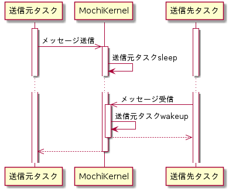
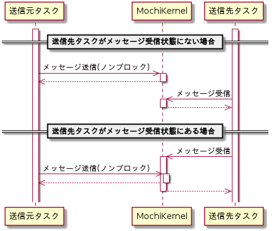
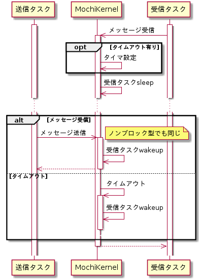

タスク間通信機能
MochiKernelはタスクにタスク間通信機能を提供します。タスクは自身のタスクレベルと同じか隣接するタスクレベルのタスクとのみ通信が行えます。
通信可能なタスクレベル
| タスクレベル | ドライバ | サーバ | ユーザ |
| ドライバ | 〇 | 〇 | |
| サーバ | 〇 | 〇 | 〇 |
| ユーザ | 〇 | 〇 |
メッセージパッシング
メッセージパッシングは任意(上限有り)のサイズのバイト列の送受信をタスク間で行います。
メッセージ送信
メッセージ送信したタスクはメッセージ送信先タスクが受信するまでブロックします。

メッセージ送信シーケンス
メッセージ送信シーケンス
メッセージ送信（ノンブロック）
ノンブロック型メッセージ送信は、送信先タスクの状態に関わらず、ブロックせずにすぐ完了します。

ノンブロック型メッセージ送信シーケンス
ノンブロック型メッセージ送信シーケンス
メッセージ受信
メッセージ受信時に受信するメッセージが無い場合は、メッセージを受信するかタイムアウトするまでブロックします。

メッセージ受信シーケンス
メッセージ受信シーケンス